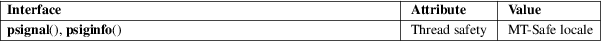

psignal, psiginfo − print signal description
Standard C library (libc, −lc)
#include <signal.h>
void
psignal(int sig, const char *s);
void psiginfo(const siginfo_t *pinfo, const
char *s);
Feature Test Macro Requirements for glibc (see feature_test_macros(7)):
psignal():
Since glibc 2.19:
_DEFAULT_SOURCE
glibc 2.19 and earlier:
_BSD_SOURCE || _SVID_SOURCE
psiginfo():
_POSIX_C_SOURCE >= 200809L
The psignal() function displays a message on stderr consisting of the string s, a colon, a space, a string describing the signal number sig, and a trailing newline. If the string s is NULL or empty, the colon and space are omitted. If sig is invalid, the message displayed will indicate an unknown signal.
The psiginfo() function is like psignal(), except that it displays information about the signal described by pinfo, which should point to a valid siginfo_t structure. As well as the signal description, psiginfo() displays information about the origin of the signal, and other information relevant to the signal (e.g., the relevant memory address for hardware-generated signals, the child process ID for SIGCHLD, and the user ID and process ID of the sender, for signals set using kill(2) or sigqueue(3)).
The psignal() and psiginfo() functions return no value.
For an explanation of the terms used in this section, see attributes(7).

POSIX.1-2008.
glibc 2.10. POSIX.1-2008, 4.3BSD.
Up to glibc 2.12, psiginfo() had the following bugs:
|
• |
In some circumstances, a trailing newline is not printed. | ||
|
• |
Additional details are not displayed for real-time signals. |
sigaction(2), perror(3), strsignal(3), signal(7)